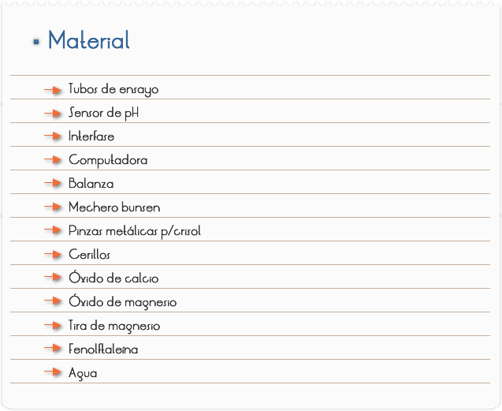

Introducción
Todas las aplicaciones de los elementos químicos y de sus compuestos dependen de sus propiedades físicas y químicas y estas tienen variaciones periódicas según sea la localización de los elementos en la Tabla Periódica. Los tamaños atómicos disminuyen al aumentar el número atómico a través de los períodos de los elementos representativos y esto da lugar a que hacia la derecha de la Tabla Periódica disminuya el carácter metálico, en consecuencia aumentan los potenciales de ionización y aumenta la afinidad electrónica, de tal forma que se puede generalizar que los elementos metálicos están en la región izquierda y se comportan como agentes reductores, mientras que los elementos a la derecha son cada vez menos metálicos; más no metales y se comportan como agentes oxidantes.
En los grupos, los tamaños atómicos aumentan al aumentar el número atómico y aumenta también el carácter metálico. El poder oxidante o reductor de un elemento es una función periódica y ésta está en función de la posición de éste en la Tabla periódica, el poder oxidante aumenta en un período de izquierda a derecha mientras que el poder reductor en un período aumenta de derecha a izquierda. El comportamiento de los compuestos químicos está determinado principalmente por los enlaces químicos que los constituyen, y éstos dependen de las posiciones en la Tabla Periódica de los elementos combinados.
Objetivo
Demostrar que los elementos que pertenecen a un mismo grupo poseen propiedades semejantes, razón por la cual se agrupan en familias. Reconocer lo útil que es conocer la posición en que se encuentran los elementos en la tabla periódica ya que esto nos permite predecir el tipo de reacciones en las que participarán y las propiedades de los compuestos que se formen a partir de estas combinaciones.

- Preparación para determinación de pH
1. Realiza los procedimientos de Inicio, y conexión de la interfase con la computadora (Software Excel)",
2. Inicia el Programa Excel para la adquisición de datos con el sensor de pH.
3. Determina el intervalo de tiempo para las mediciones indiferentes de tiempo (0.2 a 0.5 segundos) por determinación.
4. Pesa medio gramo de óxido de calcio, viértelo en un tubo de ensayo y observa su aspecto.
5. Adiciona agua hasta la mitad del el tubo que contiene el óxido de calcio, agítalo y observa si se disuelve.
6. Una vez hecha la disolución, mide el pH y observa.
7. Agrega unas gotas de fenolftaleína y observa que sucede.
8. Realiza las anteriores operaciones, pero ahora con óxido de magnesio en otro tubo.
9. Toma con unas pinzas un poco de magnesio, y acércala a la flama del mechero y observa que sucede.
10. Adiciona las cenizas obtenidas en el experimento anterior en una cápsula de porcelana y agrégale agua hasta la mitad, mide su pH, adiciónale fenolftaleína tres gotas y observa lo que sucede.
- Explica los aspectos físicos que presentaron cada uno de los óxidos
1) ¿Qué sucedió con ambos óxidos al adicionar el agua?
2) ¿Cuál fue el pH que presentaron cada una de las soluciones?
3) Describe lo sucedido al adicionar dos gotas de fenolftaleína a cada sustancia
4) Menciona si hubo semejanzas en las propiedades de los óxidos de calcio y del magnesio.
5) Describe las propiedades de esta familia de elementos
6) ¿Qué sucedió al poner el magnesio en la flama del mechero y cual fue su reacción con la fenolftaleína?
7) ¿Qué propiedades físico-químicas se pueden encontrar en la tabla periódica?
8) ¿Encontraste algunas semejanzas entre él óxido de magnesio y las cenizas del último experimento?
9) ¿Qué conclusiones tienes después de realizar tu práctica?
La tabla periódica de los elementos fue propuesta por Dimitri Mendeleiev y Julius Lothar Meyer quienes, trabajando por separado, prepararon una ordenación de todos los 64 elementos conocidos, basándose en la variación computacional de las propiedades químicas (Mendeleiev) y físicas (Meyer) con la variación de sus masas atómicas. A diferencia de lo que había supuesto Newlands, en la Tabla periódica de Mendeleiev los periodos (filas diagonales y oblicuas) no tenían siempre la misma longitud, pero a lo largo de los mismos había una variación gradual de las propiedades, de tal forma que los elementos de un mismo grupo o familia se correspondían en los diferentes periodos. Esta tabla fue publicada en 1869, sobre la base de que las propiedades de los elementos son función periódica de sus pesos atómicos